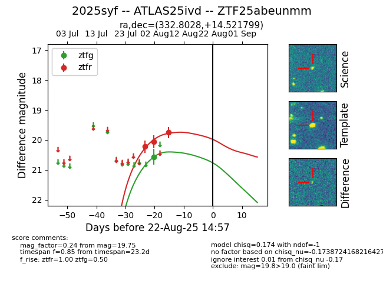

Target 2025syf at 2025-08-22 18:16, see:
FINK: fink-portal.org/ZTF25abeunmm
Lasair: lasair-ztf.lsst.ac.uk/objects/ZTF25abeunmm
ALeRCE: alerce.online/object/ZTF25abeunmm
TNS: wis-tns.org/object/2025syf
YSE: ziggy.ucolick.org/yse/transient_detail/2025syf
alt names
ZTF25abeunmm (ztf,alerce)
2025syf (tns,yse)
ATLAS25ivd (atlas)
coordinates:
equatorial (ra, dec) = (332.8028,+14.52180)
galactic (l, b) = (74.9364,-33.03181)
photometry
last ztfg=20.57, ztfr=19.75
1 ztfg, 3 ztfr detections
